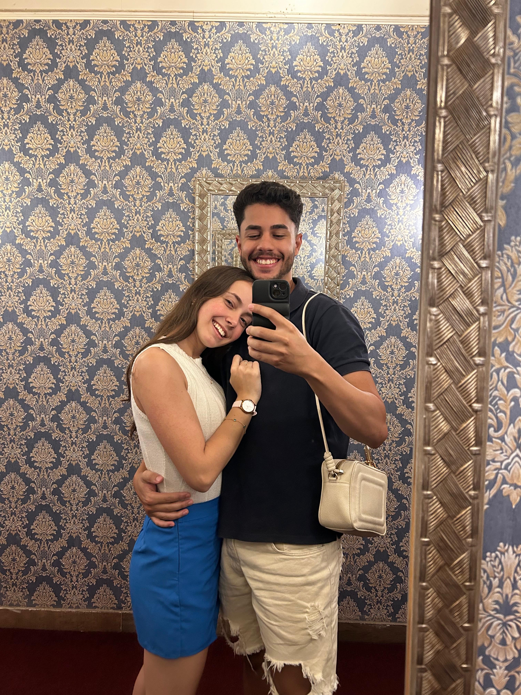
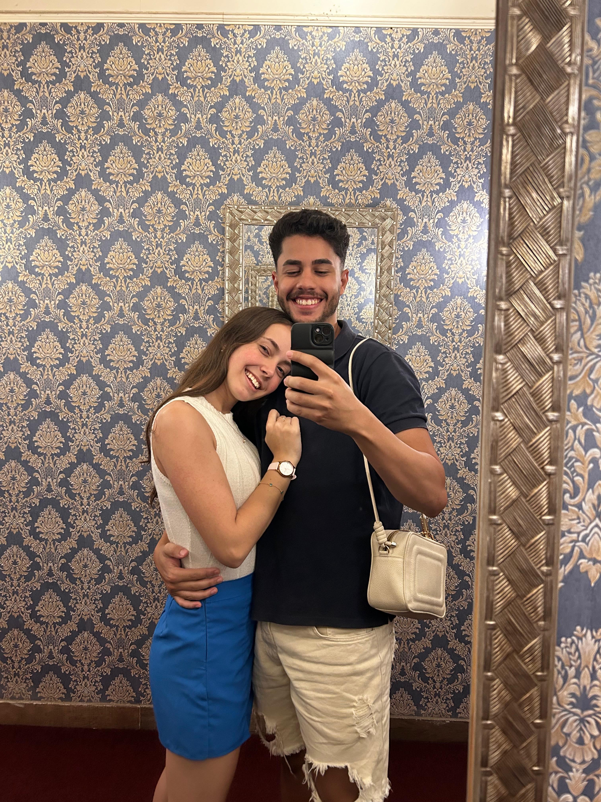

Feliz Dia dos Namorados


 

Feliz Dia dos Namorados!
Espero que você tenha gostado da comida, do lugar e do momento.
Pensei em algo que você gostaria bastante, porque, sendo um dia tão especial, não poderia deixar de te
agradar.
Tenho certeza de que você está linda, assim como estava no ano passado: com o cabelo sedoso, maquiada,
as unhas feitas e aquele perfume maravilhoso.
Já estou elogiando de antemão, porque sei que você sempre me surpreende.
Esse 1 ano passou tão rápido... Parece que foi ontem que estávamos comemorando nosso primeiro Dia dos
Namorados.
Foi uma noite especial, cheia de detalhes que nunca vou esquecer.
Quero aproveitar esse momento para agradecer pelo amor que você tem por mim.
Comemorar essa data é muito mais do que um simples gesto; é celebrar o que significa namorar.
Namorar é se relacionar de forma romântica, sentir a barriga revirar, suar frio, roer as unhas de
nervosismo — tudo isso porque algo altera a química do nosso corpo e nos transforma.
De repente, começamos a ser pessoas diferentes: nos preocupamos com o parceiro, queremos estar juntos,
pensamos nele a todo instante.
Namorar é ser parceiro. É rir e chorar junto. É ajudar e ser ajudado.
E eu só tenho a te agradecer por todos esses momentos e por tudo o que você faz por mim.
Essa é a nossa segunda comemoração dessa data, e espero que venham muitas outras, se Deus permitir.
Obrigado por ser quem você é e por fazer parte da minha vida.
Com todo o meu amor,
Seu amorzinho. Kj üíï!
1 ano atrás estávamos aqui...